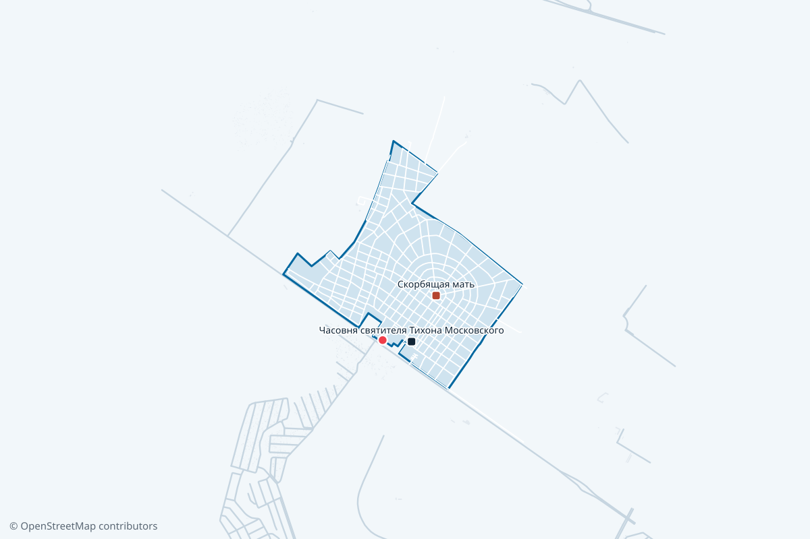

Метро
Проспект Ветеранов, 8,2 км
Дальше наземным транспортом до остановки «Южное кладбище».
МЕСТА ДАЮТ БЕСПЛАТНО ПЕРЕЧЕНЬ ПОСТАНОВЛЕНИЯ № 377
Санкт-Петербург · кладбище

По разметке OpenStreetMap.
Южное кладбище находится в Московском районе Петербурга. Территория большая, около 276 гектаров: без номера участка искать могилу здесь бесполезно. Ближайшее метро «Проспект Ветеранов»: оттуда наземным транспортом и 5 минут пешком.
Метро
Дальше наземным транспортом до остановки «Южное кладбище».
Электричка
Платформа в 5,7 км от кладбища, электрички идут с Балтийского вокзала.
На машине — точку в навигаторе ставьте на воротах, а не на названии: иначе он приведёт к середине территории.
Входов 3. Навигатор ведёт к центру участка, поэтому точку ставьте на нужных воротах: обойти территорию по периметру это 8,9 км.
| Что | Данные |
|---|---|
| Адрес | 198152 Санкт-Петербург, ул. Краснопутиловская (у ТЭЦ-15.) |
| Часы работы | май–сентябрь 9:00–18:00, октябрь–апрель 9:00–17:00 |
| Район | Московский район |
| Площадь | 276 га |
| Ближайшее метро | Проспект Ветеранов, 8,2 км |
| Железная дорога | Александровская, 5,7 км |
| Телефон администрации | Своего телефона у кладбища на госсайте нет. |
| Места | дают места (перечень постановления № 377) |
Городская справочная +7 (812) 241-24-24 — телефон учреждения в Петербурге, а не самого кладбища.
Южное кладбище входит в перечень постановления Правительства Санкт-Петербурга № 377: участок под погребение здесь предоставляют безвозмездно, в порядке очереди, по документам. Место не продаётся, а предоставляется — купить его нельзя ни у кладбища, ни у посредника. Оформить можно одиночное, двойное или семейно-родовое захоронение.
Санитарный срок · 20 лет
Подзахоронение гробом в существующую могилу — не раньше чем через 20 лет после последних похорон. Это санитарный срок, сократить его нельзя. Для урны с прахом такого ограничения нет.
Поставить или заменить памятник, ограду, цветник — любое надмогильное сооружение — можно только с разрешения администрации. Выдают его по трём документам.
По разметке OpenStreetMap на территории отмечены Часовня святителя Тихона Московского и 1 известное захоронение или мемориал. Туалетов и воды в данных нет — это не значит, что их нет на месте.
Открыто в 1971 году на южной границе города, там, где до войны стояла деревня Венерязи. Сейчас это крупнейшее кладбище Петербурга и одно из самых больших в Европе: хоронят сюда жителей всех районов города.
Масштаб определяет и способ поиска: без номера участка могилу здесь не найти. Территория размечена строго, между секторами асфальтированные проезды.
На кладбище работает часовня-храм святителя Тихона, патриарха Московского, и колумбарий открытого типа.
Да, это кладбище входит в перечень постановления Правительства Санкт-Петербурга № 377 от 03.04.2008 — участок предоставляется безвозмездно, в порядке очереди, по документам. Продать или передать его нельзя: место не продаётся, а предоставляется.
Гробом — не раньше чем через 20 лет после последних похорон: это санитарный срок, сократить его нельзя. Для урны с прахом такого ограничения нет.
Отдельного номера этого кладбища на госсайте нет. Общие вопросы — в городскую справочную +7 (812) 241-24-24, вопросы по участку решают на месте.
Летом, с мая по сентябрь, — 9:00–18:00. Зимой, с октября по апрель, — 9:00–17:00. Часы указаны по госсайту и обзвоном не проверялись.
Входов 3. Навигатор обычно ведёт к центру территории, поэтому точку лучше ставить на нужных воротах — обход по периметру это 8,9 км.
Нет. Установку любого надмогильного сооружения — памятника, ограды, цветника — согласуют с администрацией кладбища. Нужны чек на покупку, договор на работы и свидетельство о смерти.
Работы на участке делает партнёрская мастерская в Петербурге. Цену считают по замеру: от размера участка зависит и камень, и основание, и способ доставки.
Адрес, часы работы, телефон и эксплуатирующая организация — по данным СПб ГКУ «Специализированная служба по вопросам похоронного дела». Границы, дорожки и ворота — OpenStreetMap, © OpenStreetMap contributors. Часы обзвоном не проверялись.